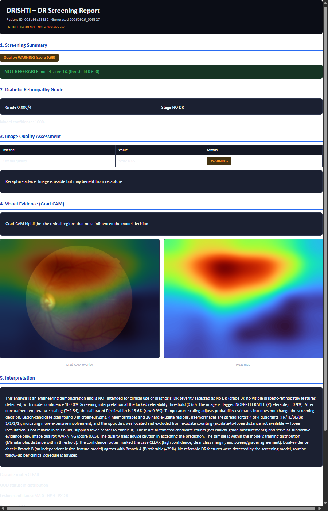
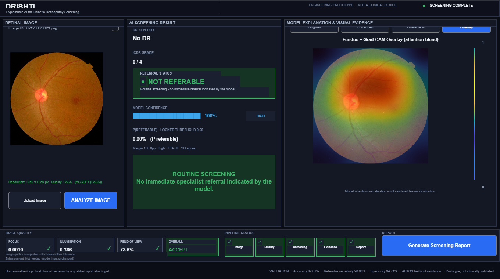
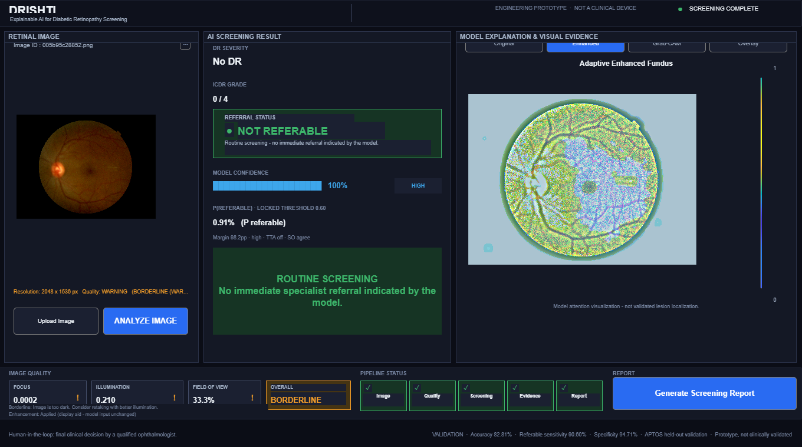
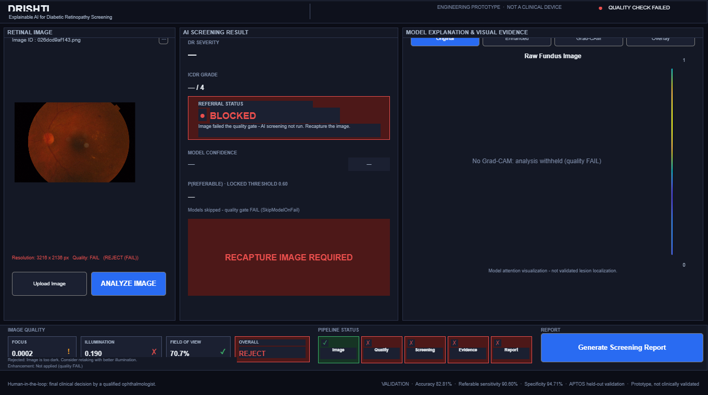
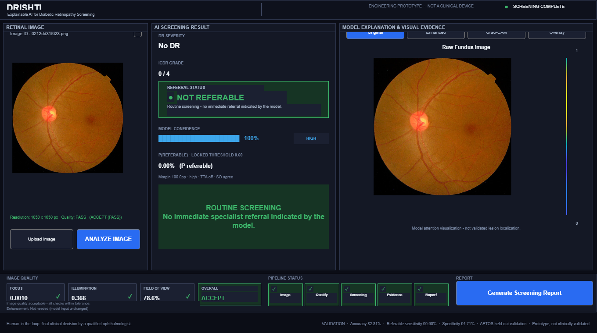
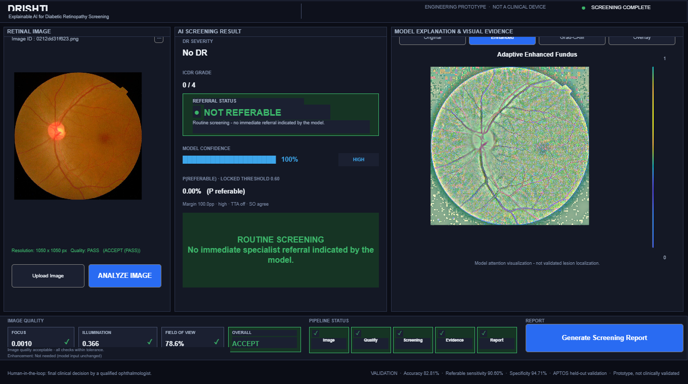
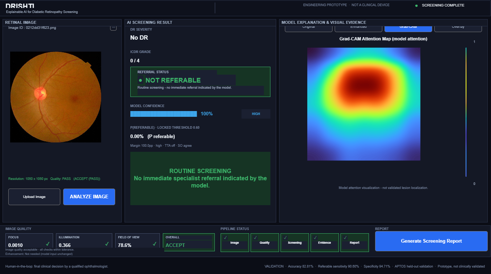
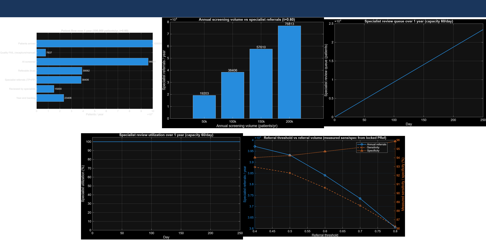

Problem statement
SIH 26038
A screening workflow whose quality gate runs before the model. A poor or unfamiliar image is withheld for recapture rather than graded. That refusal behaviour — not the classifier — is the product.
Referral demand: data/analysis/simulink_resource_simulation/scenario_results.csv, row D100. Workforce constraint: Vashist et al. 2021, citing WHO 2020. Full citations on the impact slide.


Both images are real fundus photographs from the locked APTOS validation split, captured by the running application (results/visual_qa/).
This ordering is the whole design. A screening system that grades every image it is handed has no way to say “I don’t know”.

Every figure below is frozen under a written contract: no retuning of the threshold or the calibration temperature, and no use of the sealed official test set.
| No DR | 0.9834 | |
| Mild NPDR | 0.6081 | |
| Moderate NPDR | 0.7850 | |
| Severe NPDR | 0.4872 | weak — main 5-class weakness |
| Proliferative DR | 0.5254 | weak — experiments deliberately off |
The two latency figures are deliberately not conflated: 0.1028 s/img is model screening only, 11.03 s/img is the complete demo path. High-resolution fundus photographs are slower again — a judge supplying a full-resolution image should expect roughly 30–45 s.
Every automated check in this project had run on the same split the champions were selected on. We then ran the full pipeline end to end on 19 unseen fundus images from three foreign cameras — DRIVE test, the IDRiD B testing set, and real-world web fundus from DRIMDB. Nothing was retrained or tuned, the 0.60 rule was untouched, and the model hashes are unchanged.



Four views of one real case from the running application. The heat-map is a statement about where the model looked, not about where a lesion is — and we measured how far apart those two things are.



Against an areal chance baseline of 0.0220, that is about 1.39× chance. The alignment is weak, and we did not retrain the model to improve a visualisation metric. We publish the number because a screening prototype that overstates its own evidence is not deployable.

At 60 reviews/day the year ends at a 23,406 backlog. At 120/day, still 8,406. Only at ~180 reviews per day does the queue clear, at 85.3% utilisation. A second, independent discrete-event simulation reaches the same conclusion.
We verified every figure we quote. Where our own earlier draft did not survive verification, we say so on the slide rather than quietly swapping it.
These are on the slide, not in the appendix. A prototype that hides its measured negatives is not safe to hand to a screening programme.
| Item | What we measured | Status | Blocker or owner |
|---|---|---|---|
| External validation | Not performed. The reported 0.9060 / 0.9471 / 0.9796 / 0.7821 are APTOS-internal, on a single dataset. | Blocked | Messidor-2 (ADCIS registration) and Sin-NP DR 2019 (data request) both need a human download. Harness written, 6/6 checks pass. |
| Grad-CAM vs lesion masks | Saliency-in-lesion 3.1%, pointing game 7.4%, mean IoU 0.035, about 1.39× areal chance. | Measured weak | MACE not measured. We did not retrain to improve a visualisation metric. |
| Confident grade on an ungradable image | One DRIMDB image the dataset labels Bad passed the quality gate and came back referable, routed CLEAR. Neither gate caught it. | Open | Recorded, not tuned away — the threshold and OOD bound are provenance-pinned. |
| Fovea localisation | 0 of 10 held-out images within 300 px of ground truth. | Failed | No fovea-derived distance is emitted; the field stays unavailable with an explicit narrative line. |
| Severe / Proliferative recall | 0.4872 and 0.5254 — the main 5-class weakness. | Off by decision | Target-boosted weighting and targeted augmentation are disabled in the training script. Owner: mentor approval. |
| Microaneurysm detection | Patch AUC 0.976, but detection recall only 0.113 at the evaluated threshold. | Low recall | Counts are reported as candidates, never as findings. |
| Optic-disc generalisation | Locates 9/10 within 300 px on IDRiD, but only 10.6% acceptance on APTOS validation. | Limited | Trained on a different camera set; the honest hardware-threshold refusal works as designed. |
| Image enhancement | The A/B experiment showed it degraded grading. | Excluded on evidence | Excluded from the inference path; retained as a display aid only. |
| Vessel segmentation | Adding vessel features moved Branch-B AUC from 0.8969 to 0.8810. | Excluded on evidence | Measured negative result, kept in the record rather than forced into production. |
| Vashist P. et al. (2021) | National survey of DR, 21 districts, n = 5,986 examined. Indian J Ophthalmol 69(11):3087–3094. doi:10.4103/ijo.IJO_1310_21 |
| Jotheeswaran A.T. et al. (2016) | DR prevalence by age band, systematic review. Indian J Endocrinol Metab 20(Suppl 1):S51–S58. doi:10.4103/2230-8210.179774 |
| Vashist P. et al. (2025) | Ophthalmic workforce and infrastructure, national survey. Indian J Ophthalmol 73(11):1679–1686. doi:10.4103/IJO.IJO_2816_24 |
| Sun H. et al. (2021) | IDF Diabetes Atlas 10th edition, India estimate. Diabetes Res Clin Pract 183:109119. doi:10.1016/j.diabres.2021.109119 |
| Anjana R.M. et al. (2023) | ICMR-INDIAB-17 national diabetes survey. Lancet Diabetes Endocrinol. doi:10.1016/S2213-8587(23)00119-5 |
| Pradeepa R., Mohan V. (2021) | Tabulation of the IDF 2019 India estimate. Indian J Ophthalmol 69(11):2932–2938. doi:10.4103/ijo.IJO_1627_21 |